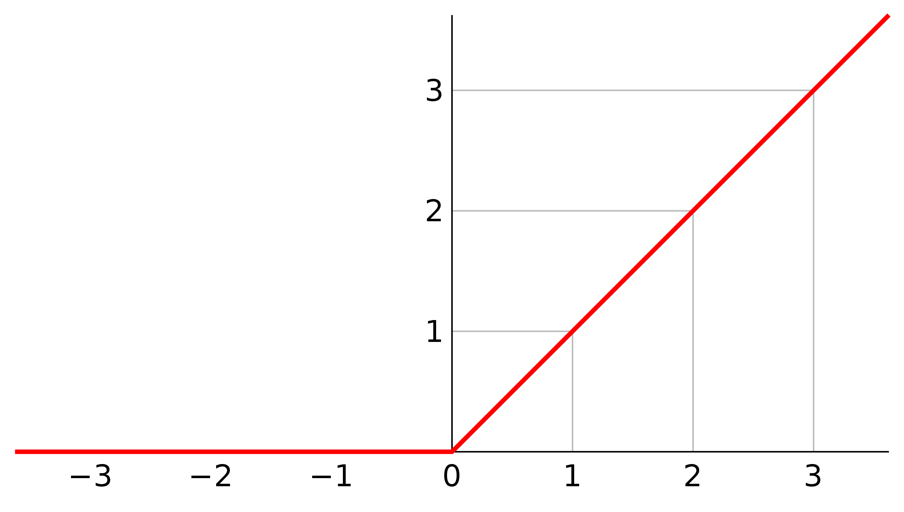
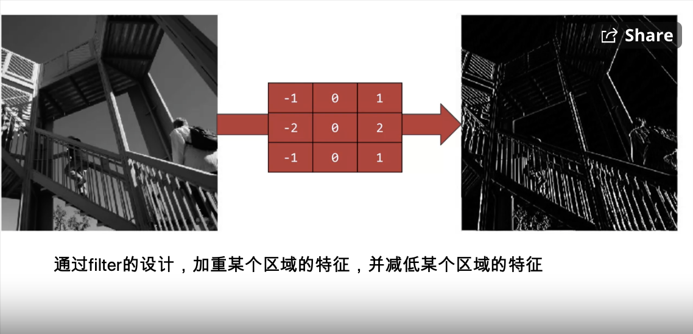
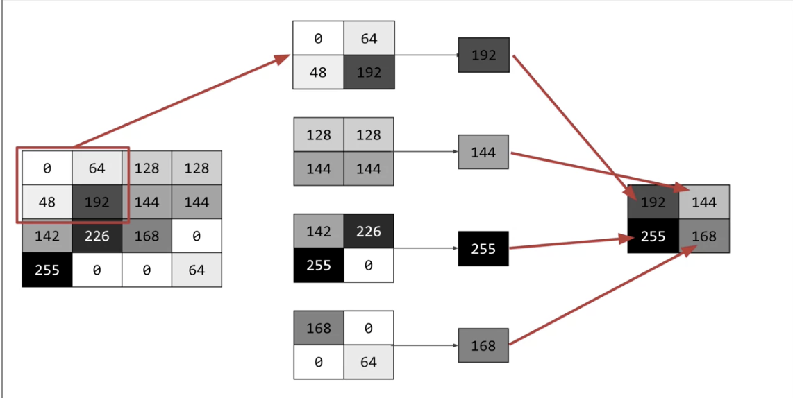
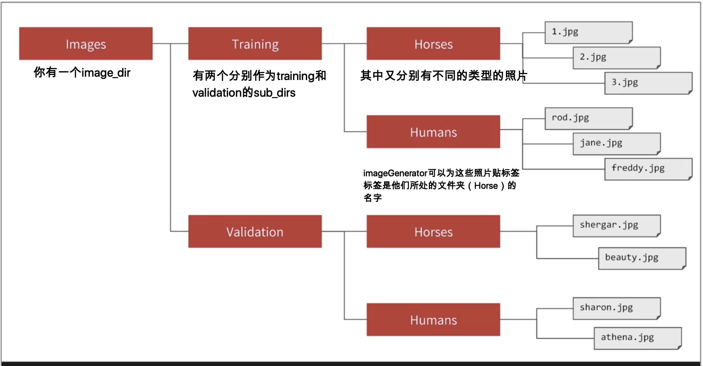

Tensorflow_in_Practice
What is bias?
但凡对于神经网络有过一定了解的人，就不会不知道bias。bias为分界线提供了一个灵活的变化。假设现在使用的激活函数是ReLU即整流线型激活函数，当加权和\( \sum_{i = 1}w_{i}*x_{i} + bias \)进入到达神经元时，这个函数的行为如下图所示  显然，施加了ReLU激活函数的神经元阈值为0，那么如果我们在训练的时候发现，0并不是一个最好的阈值，1才是一个最好的阈值，那该怎么办呢？当这种情况发生，神经网络会自适应调整bias的值，把bias的值变成-1，这样通过改变bias的大小的同时调整了函数的阈值，使得nn的适应性更加强。 bias偏差值和学习率一样，初始化的时候随机生成，我们训练神经网络，就是通过多次迭代，找出现有训练集下的能够最大化模型预测精准度的参数的值。在计算加权和的时候，为了确保bias能够随着权重在每一次的迭代中被调整到，神经网络都是把bias当作是一个不存在的输入\(x_0(= 1) \)的权重，也就是说，\( \sum_{i=0}w_{i}*x_{i} \)是等价于\(\sum_{i = 1}w_{i}*x_{i} + bias \).
Bias in Machine Learning Models
-
这里的偏见指的真的是偏见，就比如脸部识别算法对于女性的脸庞表现没有那么好, 我们的目标是develop the benefits of machine learning for everyone，所以用数据代表类别is a first step in avoiding bias.
-
interactive bias
-
selection bias
-
latent bias
-
这里有更加详细的解释
-
Human data encodes human biases by default.
- 简单的打个比方，fashion mnist中有许多的照片，但是如果encode data的人坚信只有高跟鞋才算鞋子，那么会在数据集中囊括许多的高跟鞋的照片，从而导致偏见从人类身上转移到了机器身上
Callbacks
-
在tensorflow里面可以定义一个回调机制，他的工作原理是：可以实现在每次迭代一轮之后，自动调用指定的函数，例如on_epoch_end可以帮助我们控制训练终止的时机，其实调用函数并不一定每次都要在一次迭代训练之后，而可以在六个不同的时间点，下面第二篇文章详细介绍了
-
如何实现的？其实自己也实现了一次，就懒得记了，希望csdn用不倒下，这篇博客讲的非常详细如何重写on_epoch_end, 这篇文章是最最最玩具车的介绍
-
但这篇文章讲了些许干货干活！！
CNN: Convolutional Neural Network
-
condense the image down to the important features that distinguish what makes it a shoe, or a handbag, or a shirt
-
主要的大意就是在会有一个filter，这个filter上面上面存在一些值，姑且当他们是“权重”，这些权重可以作用于某个pixel值之上，通过和他以及他的neighbour相乘得到一个新的pixel值，如下图所示
- By passing filters over an image to reduce the amount of information, they then allowed the neural network to effectively extract features that can distinguish one class of image from another.

-
这样做的目的是：加重特征(emphasize feature)

- 上面没有讲清楚，filtering的意义主要是特征加重，很少有特征减少，而下面的pooling的意义才是特征减少，摒弃掉某些特征
-
Pooling: Compress image, 给定一个区域，选取这个区域中pixel值最大的点，输出这个点，就像这样，注意最后对应的位置也是一样的
- You also saw how pooling compresses the information to make it more manageable. This is a really nice way to improve our image recognition performance.

-
使用filter会减少dimension的原因是因为，如果你这个filter是三乘三的话，那么你这张图片的最顶端，是没有neighbour的，那么也就是说他们的输出值是无法被定义的，所以只要没有足够用于计算的neighbour，那这个就是pixel的点就是无法被定义的，所以会被reduce掉
-
所谓的conv number指的是总共生成了多少个filter，如果有64个，说明有64个filter生成，且这个卷积层结束后会有64个图片
-
如何理解卷积神经网络中的channel？：
-
channel可以直观的想像成“叠加的二维图片“，每一个通道，是数字图像中存储不同类型信息的灰度图像，一个图像中最多可以有数十个通道，注意，单一的通道实际上只代表着一个灰度图像，所以如果一张图片只有一个通道的话，那么说明这张图片就是一张灰色的图片；平时的照片是彩色的，说明这是三个通道的照片，分别是RGB
-
卷积神经网络中的chaneel又分别有三个：
- 输入的图片的channel，这个由图片自身所决定
- 卷积操作完成后输出的out_channels，这个由卷积核的数量决定，比如卷积核有64个，输出的图片就有64个channel，这时候就记住他是channel就好，不要尝试直观的记忆，且这个会作为下一次卷积时的卷积核的in_channel
- 卷积核中的in_channel，是上一次卷积的out_channel，这个in_channel决定了每个卷积核会作用于多少个pixel上面
-
-
写代码的时候要注意的点就是卷积和pool只是提取特征，最后还是要丢到全连接层里面去的，如果原来的图片没有specify channel的话，必须要给他specify上
Using Real-World images
-
tensflow的一个帮忙label照片的东西
-
One feature of the image generator is that you can point it at a directory and then the sub-directories of that will automatically generate labels for you.

Course 2: Convolutional Neural Networks in Tensorflow
-
Image augmentation and data augmentation is one of the most widely used tools in deep learning to increase your dataset size and make your neural networks perform better
-
这个解决的是数据集不够的问题，比如如果猫猫一直在图片的上端，那么如果是猫猫在图片的下端就很难识别出来
-
所以可以用tf的库，这个imagegenerator可以令图片的改动不直接发生在drive上，keras的这个东西不会直接修改图片，而是在训练中做preprocessing
-
augmentation指的其实就是数据增强，比如我们可以翻转图片啊，旋转图片之类的
-
除了要增加训练集的randomness，还要增加测试集的randomness
-
所以训练时间变长的原因是因为image preprocessing takes cycle
Transfer Learning
-
Download maybe an open-source model that someone else has already trained on a huge dataset maybe for weeks and use those parameters as a starting point to then train your model just a little bit more on perhaps a smaller dataset that you have for a given task, so it is called transfer learning
-
用别人已经训练好的模型，自己再加以调整和使用
-
主要还是因为自己训练的话，训练集太小了
-
我们在调整别人的模型的时候，可以选择把别人的一些模型适当给锁住。 比如现在的目的是要实现的是图像识别，那么别人训练好的卷积层的特征一般都是universal的，我们可以直接用，在自己训练的时候，把这些训练好的卷积层给锁住，然后只训练dense layer的权值
-
Droout:
- they remove a random number of neurons in your neural network.
- Two reason why it works well:
- The first is that neighboring neurons often end up with similar weights, which can lead to overfitting, so dropping some out at random can remove this.
- The second is that often a neuron can over-weigh the input from a neuron in the previous layer, and can over specialize as a result.